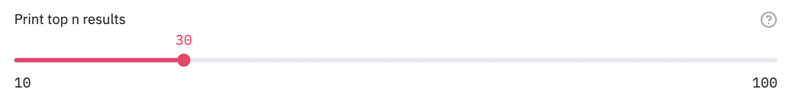
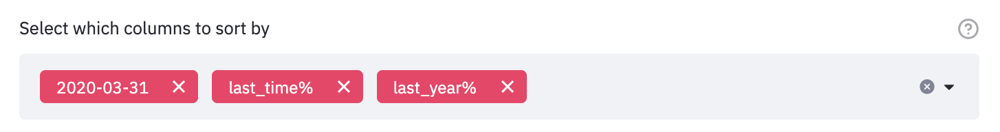
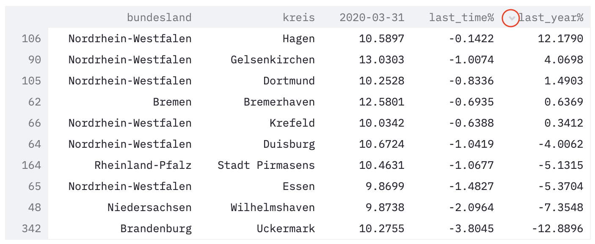
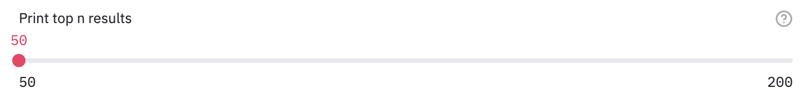
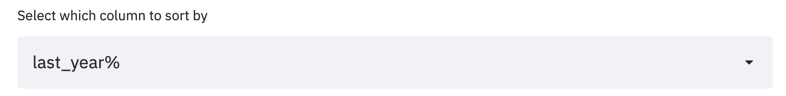
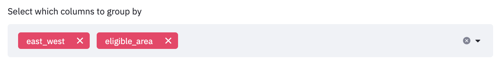
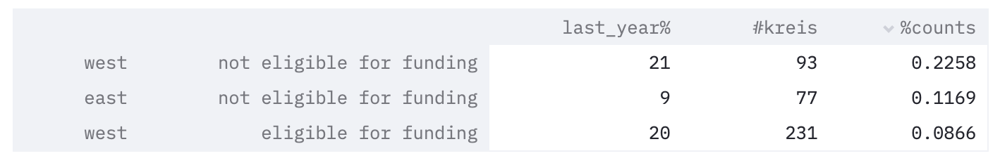
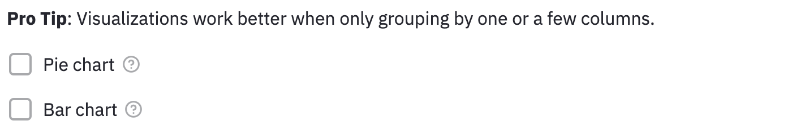
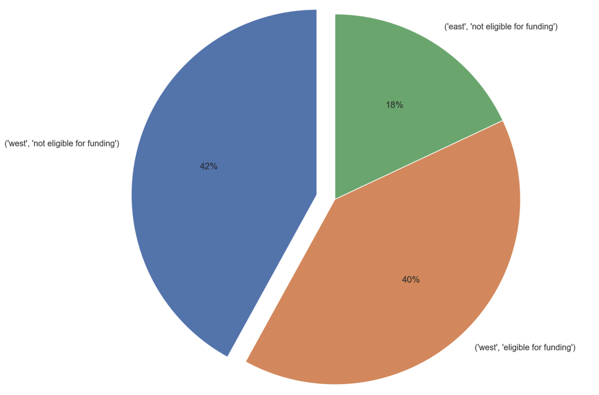
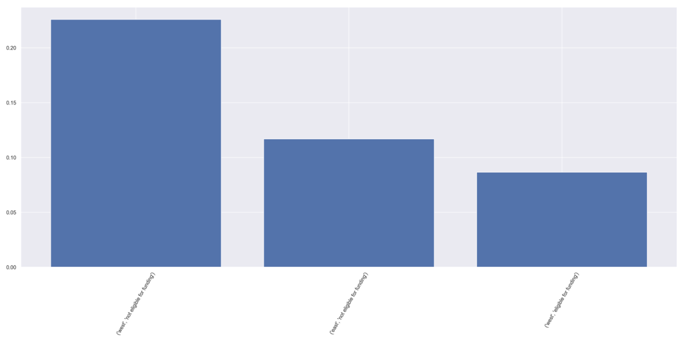

Home Page: Unemployment Rate Ranking
The home page allows you to get quick takeaways based on the latest prediction results.
The main feature of this page is to quickly see which kreis (or which group of kreise) are expected to have the highest unemployment rate for the next quarter.
Kreise Ranking
The first section is kreise ranking, containing three elements:
Slide bar
The slide bar allows you to see the top N kreise with the highest unemployment rates. It is set in a range from 10 to 100, in increments of 10. The default is set at 10.

The screenshot sample is set at 30, meaning that it would show a dataframe with the top 30 highest unemployment rates.
Sort-by Columns
This is a multi-selection input field where you can choose multiple columns you want to sort the kreise ranking by. The ranking would then be sorted based on your input selections.
The default is set to sort by three columns, in the order of: this quarter (yyyy-mm-dd), last quarter (last_time%), and the same quarter last year (last_year%). It is important to note that the order of your input selection matters:
-
The input order means that it would first sort by the first input column, and then sort by the second input column if two kreis has the same result for the first input column.
-
The input order also means that the top N kreis filtering is based on the first input column. Using the default selections as an example, the filtered result is the top N kreis based on unemployment rates of this quarter. However, the top N kreis last quarter may be a different 10 kreise. In order to get those top N kreise, you would have to put "last quarter" as the first sorting column in the input field.
The available sort by options are:
-
metedata index: state (
bundesland) and county (kreis) -
all the input dates (
yyyy-mm-dd) -
derived calculations:
-
last quarter (
last_time%): (this_Q - last_Q) / (this_Q) * 100 -
last year (
last_year%): (this_Q - this_Q_last_year) / (this_Q) * 100
-

For example, the screenshot sample is set at the three default columns: this quarter (2020-03-31), last quarter (last_time%), and the same quarter last year (last_year%).
Results
After setting the number of top kreise you want to see and the columns you want to sort by, you are presented with the dataframe output of your choosing.

This dataframe currently shows the top 30 kreis based on their unemployment rate this quarter, and also showing percentage change comparision to last quarter and last year, because they were in the input fields.
Pro Tip: Click on a column to sort by the column. Click again to switch between ascending and descending sorting.
The arrow circled in red next to the column means that the dataframe is currently sorted by that column. The arrow facing downwards means that the column is sorted in descending order.
Note that even when the dataframe is sorted by the column you click, the top results is still filtered from the full dataframe based on the first input column.

This dataframe currently shows the top 30 kreis based on their unemployment rate this quarter, and is also sorted by the percentage change compared to last year.
For example, even though the dataframe is currently sorted by last_year% when we clicked on it, it is not sorting the top 30 kreis of last_year% based on the full dataset, but sorting based on the top 30 kreis of this quarter.
Bundesland / Group Ranking
The second section is bundesland / group ranking, containing five elements, following a similar format to the previous section:
Slide-bar
The slide bar allows you to see the top N kreise with the highest unemployment rates. It is set in a range from 50 to 200, in increments of 10. The default is set at 50.

Compared to the previous section, the slide bar range is slightly larger because the reuslts in this section is grouped.
Sort-by Columns

Similar to the last section, the ranking would then be sorted based on your input column. Different from the last section, this section only allows you to sort by one column for simplicity.
Group-by columns
This multi-selection box offers a range of categorical variables to group by. The options include:
-
bundesland: the states in Germany -
growth_shrink_cities("wachsende/schrumpfende Kreise") -
east_west("West-/Ostdeutschland") -
labor_market_type("IAB-Arbeitsmarkttyp der Arbeitsagentur") -
settlement_type_of_labor_market_region("Siedlungsstrukturtyp der Arbeitsmarktregion") -
district_settlement_structure("Siedlungsstruktureller Kreistyp") -
type_of_settlement_structure("Siedlungsstruktureller Regionstyp") -
urban_rural("Städtischer Raum / Ländlicher Raum") -
metropolitan_region("Europäische Metropolregion") -
support area status("Gemeinschaftsaufgabe Verbesserung der regionalen Wirtschaftsstruktur") -
eligible area: binary variable based onsupport area status -
state area code (Amtlicher Gemeindeschlüssel, "
ags2") / state-level ("bundesland")

The default is set to group by both east_west and eligible area.
Results
The filtering result is a multi-index dataframe with three columns. The multi-index is presented based on how many columns you group by. The three columns include:
-
{sort_by_column}: the column to sort by in the filtering dataframe. The default is set to sort by its percentage change compared tolast_year%. -
#kreis: the number of kreise in that grouping. -
%count: the proportion of kreise belonging to that sorted grouping.

For example, this sample dataframe shows the top 50 kreise, sorted by last_year%, grouped by east_west and eligible area.
Reading the first row:
- the first column, `last_year%`, means that in the top 50 kreise with highest percentage change in unemployment rate compared to last year, `21` of them belong to kreise in west Germany that are not eligible for funding.
- the second column, `#kreis` means that there is a total of `93` (out of all 401) kreise that are kreise in west Germany that are not eligible for funding.
- the third column, `%counts`, means that 21 kreise accounts for `13.5%` of all the kreise in the not-eligible-for-funding-West-Germany group.
Note the number of multi-indices shown in the example. Since eligible_area have two categories, and east_west has two categories, there should be a total of 4 category groups in the index rows. However, the reason why not all combinations are shown is because some categories do not have kreise in it. Sometimes, it could be useful to see what category groups are not in the top lists. In this case, we see that there are no kreise in East Germany eligible funding in the top 50 highest unemployment rates.
Visualizations
Visualize the dataframe output results.
As explained in the tip, when grouping by multiple columns, resulting a large number of combinations, it may be hard to see the results clearly using the pie chart or bar chart.

Pie Chart
The pie chart visualizes the {sort_by_column} into proportions.

As shown above, the sample pie chart visualizes the percentage each category group takes in total from the last_year% column. For example, the not-eligible-for-funding-West-Germany group accounts for 21 out of the total of 50 top kreise, therefore, it takes up 42% as shown in the pie chart.
Bar Chart
As explained earlier, the pie chart could be a biased understanding of the category groups, and that can be balanced by understanding the percentage of those kreis accounting for the whole category group.
The bar chart visualizes the %counts column. It also draws a horizontal line on the 50% mark if at least one %counts column reaches that mark.

As shown above, the sample bar chart visualizes the percentage the top 50 kreise took up for its whole category group. Note that you could use the two arrows on the top right to expand the plot if the display column names is too small on your screen.